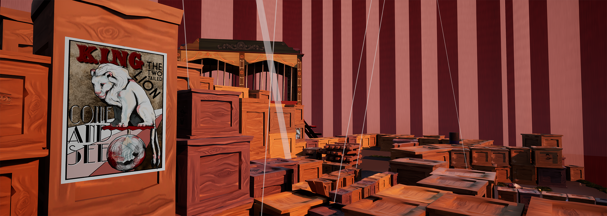
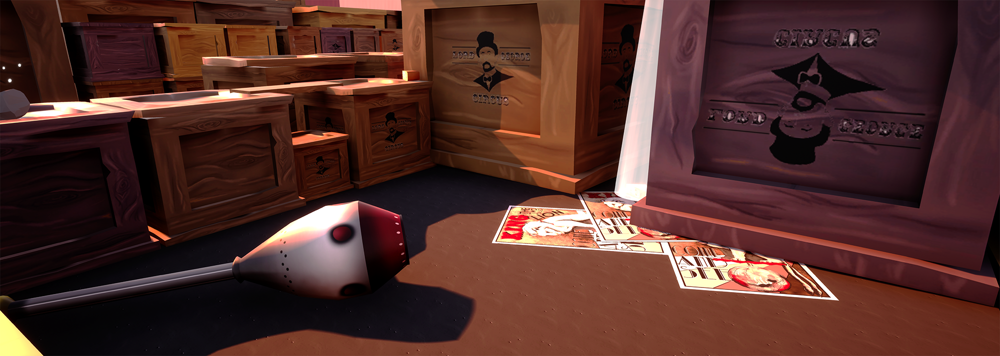
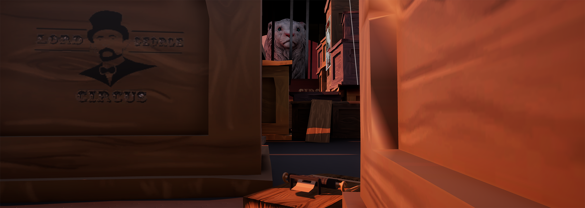
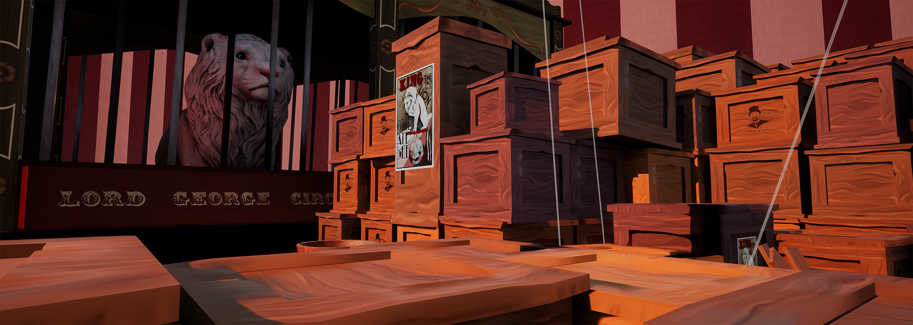

During my second year of university, I collaborated with a team of three designers and three artists to create Life&Fete. Our goal was to submit the project to 'Off the Map', a competition hosted by the British Library. Despite the unfortunate cancellation of the competition, we remained committed to completing the project. Life&Fete is a Third Person Puzzle adventure game, in which players assume the role of a mouse who has witnessed the cruelty of the circus and is determined to free the captive animals. The gameplay primarily involves using the mouse and keyboard to control the character's movement and interact with the environment, which includes pushing objects and avoiding dangerous traps. These mechanics add a layer of complexity to the game, requiring players to think strategically and use their problem-solving skills to progress through the puzzles.
We decided to divide the levels between us to give each other freedom and creativity in our own space. I had the second level which is set inside the tent. I felt setting the scene during the initial set up of the circus gave me an opportunity to create a cluttered environment which required the players nimble size to weave through small spaces and and solve puzzles. Wooden boxes, juggling pins, and balls are heavily featured as a way to guide the player and encourage interaction. The level features basic puzzles to avoid and moveable pebbles to disarm mousetraps. Due to the mouse needing to squeeze into tiny spots and through gaps, I felt diegetic signalling using lights rays from holes in the tent would be an interesting way to signpost to the objective. The mission of this level is to reach the Lion. Once at the Lion's cage, the player must locate a key, on doing so and returning to the cage, the player is met with a roar, but after freeing the lion, a cage drop capturing the player and setting up the next level.As an attempt to get the most out of our assets. I slightly altered the original texture colour, and re sized the boxes to add variation to the scene without requesting additional work from the art team.